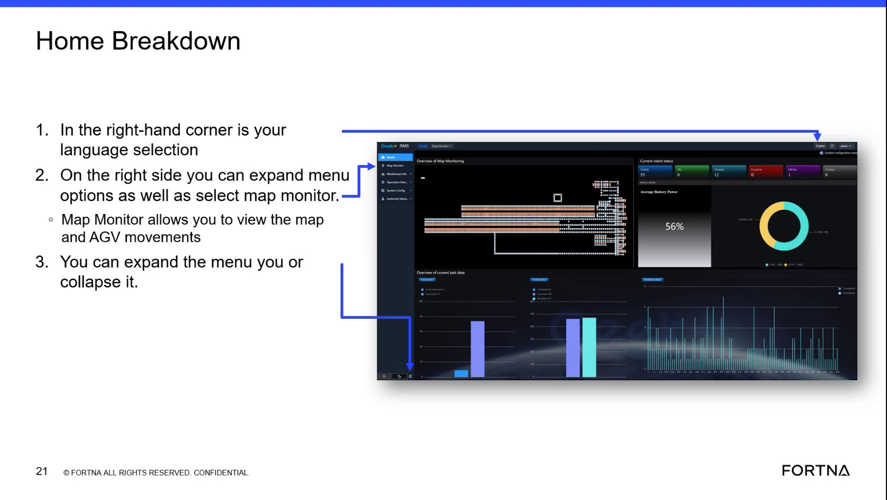

| Procedure ID | proc_switch_rms_ui_language_to_english_v1 |
|---|---|
| Title | Switch RMS UI language to English using the top-right language selection icon |
| Procedure Type | operation |
| Primary Role | operator |
| Support Safe | Yes |
| Capability Tags | fleet_system_status |
| Access Surface | rms_ui |
| Audience Roles | operator |
| Failure Pattern Tags | None |
| Validation Status | needs_sme_review |
| Merge Status | source_finalized |
Use the RMS top-right language selection control (third icon from the right) to switch the RMS interface from Chinese to English when the default login language appears in Chinese.
Use when the RMS / fleet status UI loads in Chinese and you need the interface labels in English to operate the RMS.

Responsible role: operator
Instruction:
In the RMS / fleet status UI (rms_ui) in your browser, look at the top-right corner and locate the language selection control (the third icon from the right).
Expected result:
You can visually identify the top-right language selection control (third icon from the right) on the RMS UI.
Responsible role: operator
Instruction:
If the RMS UI is currently in Chinese, click the third icon from the right (language section) and switch the language to English.
Expected result:
RMS UI text and labels display in English (not Chinese) after selecting the English language option.
Stop or Escalate If: